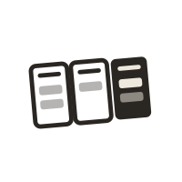
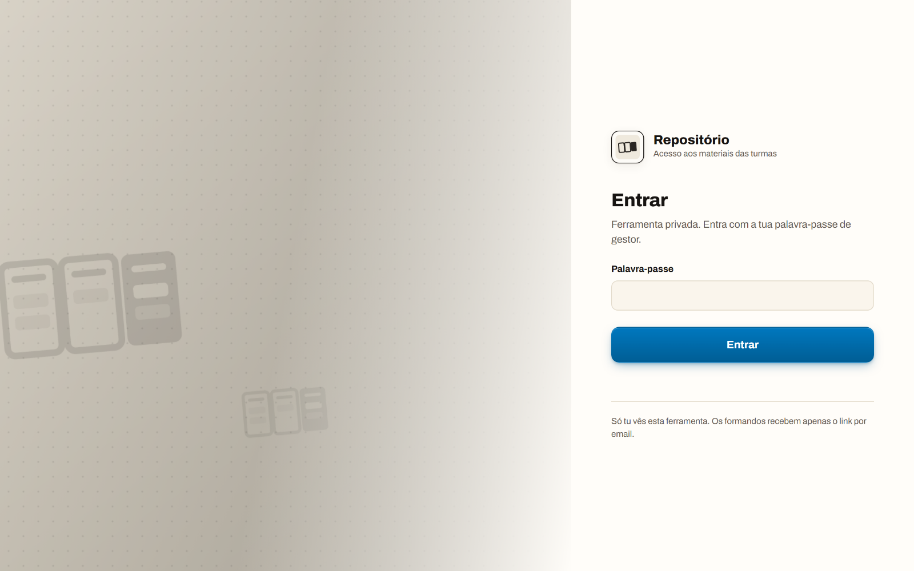
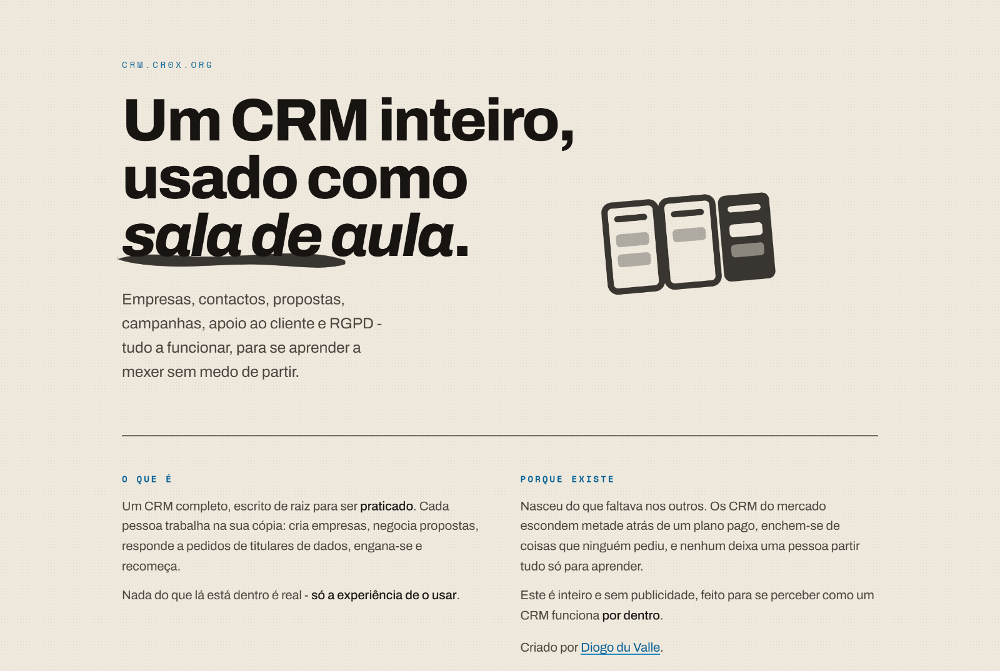
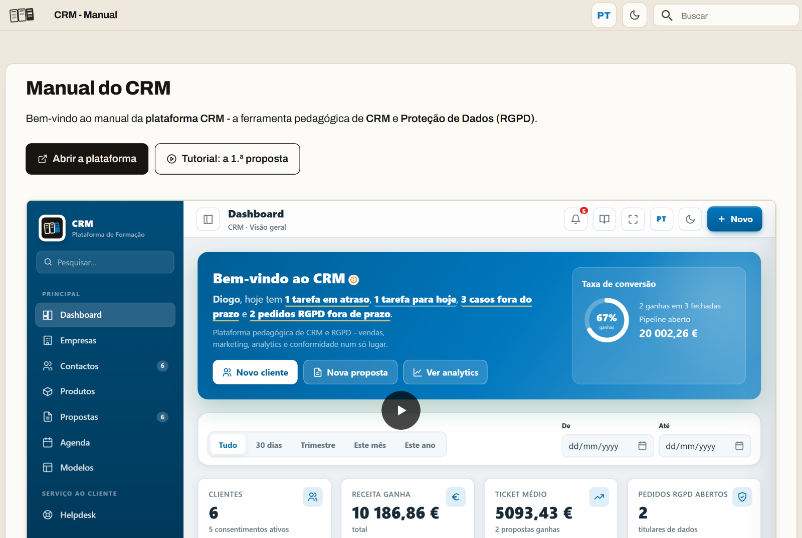
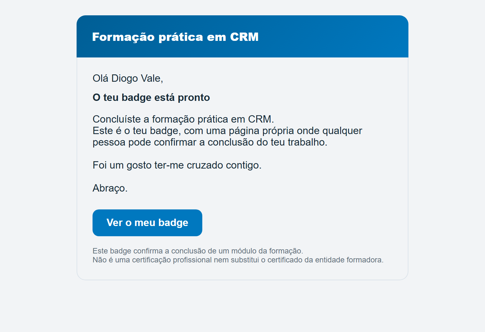
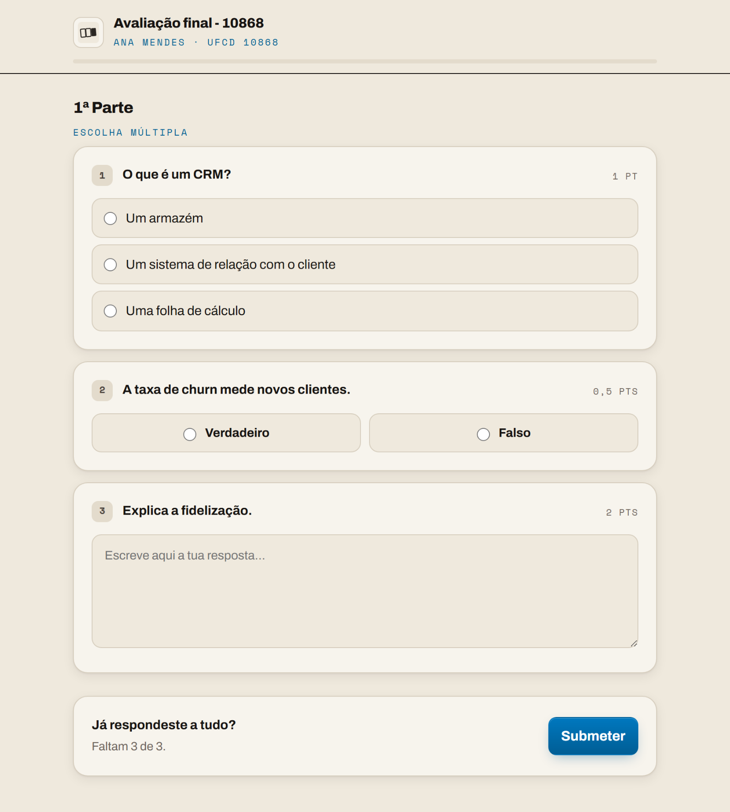
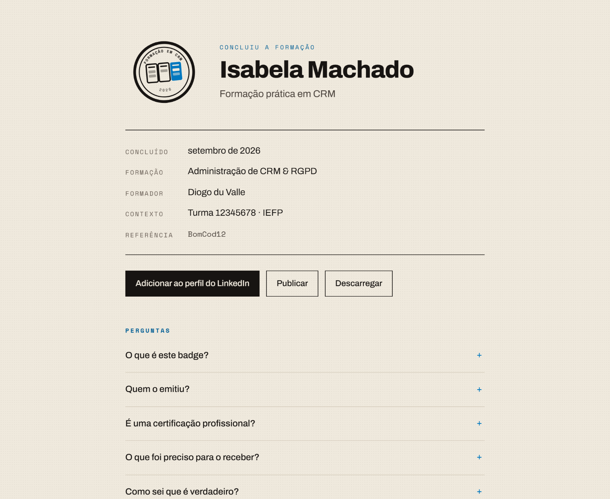
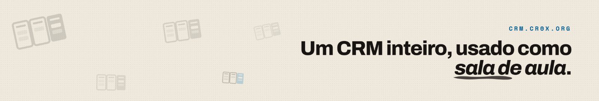
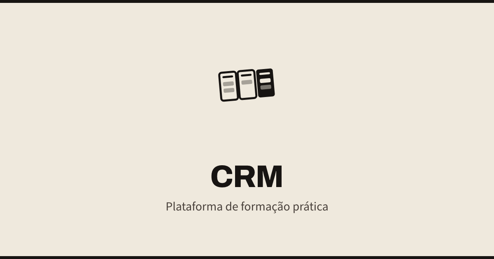
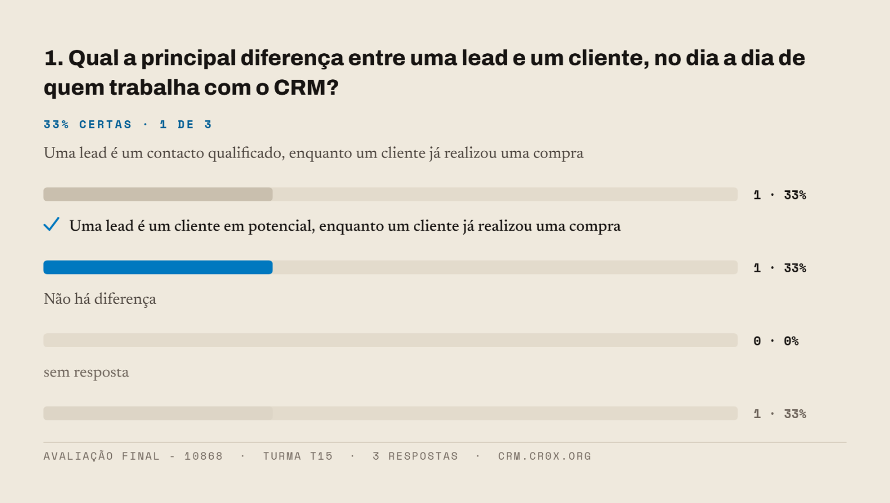

Setembro, 2026
Este manual estabelece as normas da identidade visual do crm.cr0x.org - a plataforma onde um CRM inteiro é usado como sala de aula. Aplica-se a tudo o que leva a marca: a própria plataforma, o repositório de sessões, o manual, os emails, os badges de conclusão, os materiais de apresentação e as redes.
A identidade não é decorativa. Uma parte do que aqui está - os badges, as credenciais, os emails - é material que fica no currículo de quem passou pela formação. A coerência entre o que se envia e o que se verifica é o que torna um badge credível.
A marca não se redesenha: gera-se. Todas as formas saem dos ficheiros em marca/logo/ e todas as cores saem de estilo/tokens.css. Não existe neste documento nenhuma cor escrita à mão nem nenhuma forma desenhada de novo. Se a marca mudar, muda-se lá e reimprime-se isto.
Nunca reconstruir a marca a partir deste PDF, de uma captura de ecrã ou de memória. Usar sempre o ficheiro original.
Formador e autor da plataforma.
Dúvidas sobre este manual ou pedidos de ficheiros:
A marca é um quadro de trabalho visto de cima: três colunas, como as de um funil de vendas ou de um quadro de tarefas. Duas estão por fazer, em contorno; a terceira está cheia - é o trabalho feito.
É a ideia da plataforma numa forma só: não se aprende um CRM a ver, aprende-se a mexer até a coluna ficar cheia.
A marca é apenas o símbolo. Quando é preciso escrever o nome ao lado, escreve-se crm.cr0x.org em Space Mono, em maiúsculas espaçadas - nunca desenhado, nunca noutra letra.
A inclinação de 5 graus faz parte da marca. Não se endireita.

A versão badge - com a terceira coluna a azul - existe só na página do badge e no selo. Em todo o resto, a marca é de uma cor só. O favicon reduzido perde as barras interiores porque a 16px elas viram ruído.
A margem mínima à volta da marca é a largura de uma coluna (X). Dentro dela não entra texto, nem outro logótipo, nem o limite da página.
A zona tracejada é a área de proteção: X de cada lado, onde X é a largura de uma coluna da própria marca.
Abaixo destes tamanhos a marca perde as barras interiores e deixa de se ler. Nunca reduzir mais.
| Versão | Impressão | Digital |
|---|---|---|
| Marca | 24 mm de largura | 90 px |
| Símbolo | 12 mm | 48 px |
| Ícone de aplicação | - | 32 px |
| Favicon reduzido | - | 16 px |
24 mm
12 mm
favicon
Quando o espaço obriga a ir abaixo do mínimo da marca, troca-se de versão - símbolo ou favicon reduzido - em vez de encolher a que lá está.
Pesos 800 (títulos), 700 (subtítulos e botões) e 600 (etiquetas). O itálico 800 usa-se só para destacar uma palavra dentro de um título.
Pesos 400 e 500. É a letra do que se lê com tempo: a entrada, as perguntas de um teste, os textos deste manual.
Sempre em maiúsculas, com espaçamento entre letras de .14 a .24em. Nunca em texto corrido.
A aplicação e o repositório - as ferramentas de trabalho - usam Inter, que aguenta interfaces densas e tabelas. Vem de estilo/tokens.css.
| Onde | Letra |
|---|---|
| Entrada, manual, badge, teste, emails, slides | Archivo · Newsreader · Space Mono |
| Plataforma e repositório (por dentro) | Inter |
É de propósito: o que a pessoa recebe tem a cara da casa; a ferramenta onde trabalha tem a cara de uma ferramenta.
A serifa nunca entra num controlo - botão, campo, caixa de seleção. Num campo, a serifa atrapalha a leitura rápida.
Todas são de licença aberta (SIL Open Font License) e carregam-se do Google Fonts. Alternativas do sistema, por esta ordem: system-ui para a Archivo e a Inter, Georgia para a Newsreader, ui-monospace para a Space Mono.
| Papel | o fundo. Usa-se em vez de branco: um branco puro ao lado do creme lê-se como uma mancha. |
| Tinta | o texto. Usa-se em vez de preto: um preto ao lado do creme lê-se como um buraco. |
| Neutra | a cor da marca. O logótipo é todo nesta, incluindo a terceira coluna. |
| Azul | ação: botões, ligações, a coluna cheia do badge. Não entra na marca. |
O azul da marca sobre papel dá 3,9:1 - abaixo do mínimo legível. Em texto pequeno e em etiquetas usa-se #005e95 (RGB 0 94 149 · CMYK 100 37 0 42), que dá 5,6:1 e é o mesmo azul, só mais fundo.
Não há referência Pantone: esta marca nasceu em ecrã e vive em ecrã. Para impressão a cores diretas, aproximar pelo CMYK indicado e conferir prova.
Cinzentos de apoio, para texto secundário sobre papel: #4a423c e #6f655c. Filete e separadores: #d6cdbd.
Sobre papel usa-se sempre a versão principal. É a situação normal e não há razão para fugir dela.
Sobre tinta ou sobre a cor de uma escola, usa-se a versão em papel - a uma cor só. A marca nunca leva contorno para se destacar.
Sobre imagem, a marca só entra onde o fundo for calmo e o contraste chegar. Se não chegar, põe-se um véu por baixo - nunca se altera a marca.
O contraste entre a marca e o fundo nunca deve ser inferior a 3:1. Na dúvida, mede-se.
Esta lista não é exaustiva. A regra geral é uma só: a marca usa-se como está no ficheiro. Tudo o que a altere - proporção, ângulo, cor, elementos, efeitos - está errado.
Os ícones da interface são a traço, de uma cor só, desenhados na mesma grelha de 24 pixéis, com espessura 1,8 e pontas redondas.
Herdam sempre a cor do texto onde estão (currentColor) - por isso funcionam em papel, em tinta e em qualquer cor de escola sem se tocar neles.
Um emoji é colorido, muda de desenho conforme o sistema e não se alinha com o texto. Onde faltar um ícone, desenha-se mais um na mesma grelha.
Um ícone nunca substitui uma etiqueta num botão de ação. Acompanha-a.
Os 49 ícones estão em marca/icones/svg/ e no conjunto I dentro da aplicação.
Entrada na plataforma

Repositório de sessões
Por dentro, a plataforma e o repositório são ferramentas de trabalho: fundo claro neutro, azul de ação, Inter, tabelas densas. É o ambiente onde se está horas seguidas.
As cores da interface vivem todas em estilo/tokens.css, e os componentes em estilo/componentes.css. Não se escreve uma cor à mão dentro de uma página.

crm.cr0x.org

crm.cr0x.org/manual
A entrada é papel, tinta e três letras. Fundo creme com grelha de pontos, objetos da marca a boiar, títulos em Archivo com a pincelada, texto em Newsreader.
O manual da plataforma segue a mesma identidade, com o conteúdo em cartão de papel sobre o fundo creme.
Todos os emails da plataforma - convite, avaliação, badge, recuperação de acesso - saem do mesmo cartão: faixa de cor no topo, saudação, título, texto, um botão, e um rodapé que avisa o que fica registado.
A faixa e o botão tomam a cor da escola a que a turma pertence; sem escola, o azul da plataforma. O nome do remetente também é o da escola. O endereço é sempre o mesmo.
Um email nunca leva imagens carregadas de fora nem tipos de letra próprios: a caixa de entrada não os garante. Cor, texto e um botão - mais nada.
O desenho vive em dois sítios, de propósito: nas Edge Functions (Repo, badges, testes) e na aplicação (convites e exercícios). Mexer num obriga a mexer no outro.

O cartão, com o azul da plataforma

Avaliação · crm.cr0x.org/t

Badge · crm.cr0x.org/b
Estas páginas não são a ferramenta - são material. Por isso têm a identidade do site, e não a da aplicação: papel, tinta, Archivo e Newsreader.
O badge é um registo, não um diploma. A página diz sempre, por escrito, que confirma a conclusão de um módulo e que não substitui o certificado da entidade formadora. Essa frase não se retira.

Capa de rede social · 1128 × 191

Pré-visualização de ligação · 1200 × 630

Resultados, para slides
As imagens que saem da plataforma para fora - capas, pré-visualizações, gráficos de resultados - são desenhadas com os mesmos valores e exportadas a 2x.
Uma imagem para slide nasce sempre clara. O tema escuro é da ferramenta e não sai dela.
Cada escola tem o seu espaço em crm.cr0x.org/nome-da-escola, com identidade própria à volta da plataforma. O que muda é pouco e está definido:
| Muda | Onde aparece |
|---|---|
| Nome da escola | entrada do espaço, remetente dos emails, contexto do badge |
| Cor da escola | faixa e botão dos emails, destaques do espaço |
| Logótipo da escola | entrada do espaço e barra lateral |
A cor da escola substitui o azul - nunca a tinta, nunca o papel, nunca a marca.
A marca do CRM, as quatro letras, o papel e a tinta, a forma dos ícones, o desenho do badge e do email. Uma escola veste o espaço; não veste a plataforma.
Um badge emitido pela escola A e outro pela escola B têm de se ler como a mesma coisa: quem os recebe não conhece as duas escolas, conhece o sítio onde se verificam. A confiança está na coerência, não na personalização.
Exemplos de cores de escola. Cada uma tem de manter 4,5:1 sobre papel quando levar texto por cima.
marca/
logo/
crm-marca.svg A MARCA
crm-marca-tinta|papel a uma cor
crm-marca-solida.svg interior cheio
crm-marca-badge.svg só para o badge
crm-simbolo-*.svg tela quadrada
crm-app-*.svg ícone de aplicação
crm-favicon*.svg favicon
png/ o mesmo, 64 a 1024
icones/svg/ os 49 ícones
redes/ capas e a sua receita
maquetes/ as capturas deste manual
manual-normas.html este documento
estilo/
tokens.css AS CORES
componentes.css os componentes
Toda a forma sai de marca/logo/. Toda a cor sai de estilo/tokens.css. Uma página que precise de uma cor liga a folha de estilos; não copia o valor.
As maquetes são capturas reais, tiradas outra vez a cada reimpressão. Nada aqui é uma simulação desenhada à parte.
node ferramentas/imprimir-manual.mjs
Pedidos de ficheiros noutro formato - EPS, PDF vetorial, versões para bordado ou gravação - fazem-se a partir dos SVG originais. Nunca a partir de um PNG.
| Versão | Data | O que mudou |
|---|---|---|
| V1.0 | Set. 2026 | Primeira edição como manual de normas. |
Sempre que mudar uma forma, uma cor, uma letra ou uma aplicação nova entrar. A versão sobe uma décima; uma alteração à própria marca sobe um número inteiro.
Este PDF é uma impressão do sistema, não o sistema. Em caso de divergência entre o que aqui está e o que está em marca/ e estilo/tokens.css, manda o repositório.
Formador e autor da plataforma